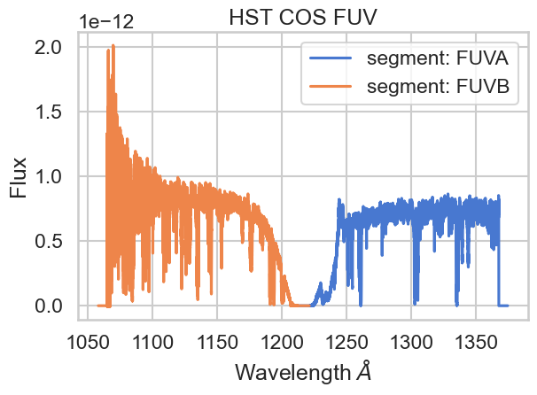
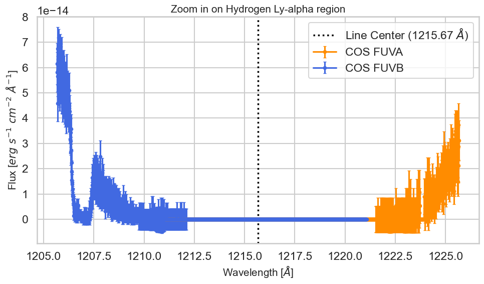

huble st#
The Cosmic Origins Spectrograph (COS) 是HST上的紫外光谱仪。
MAST是HST档案馆
from astroquery.mast import Observations
from pathlib import Path
from astropy.table import Table
import matplotlib.pyplot as plt
import seaborn as sns
sns.set_theme(style="whitegrid", context="talk")
plt.rcParams['figure.dpi'] = 100
colors = sns.color_palette("muted")
proposal 意为申请书，所有id就是科研项目id
obs_from_proposal = Observations.query_criteria(proposal_id = '15366')
products_from_proposal = Observations.get_product_list(obs_from_proposal)
products_from_proposal[:5]
Table masked=True length=5
| obsID | obs_collection | dataproduct_type | obs_id | description | type | dataURI | productType | productGroupDescription | productSubGroupDescription | productDocumentationURL | project | prvversion | proposal_id | productFilename | size | parent_obsid | dataRights | calib_level | filters |
|---|---|---|---|---|---|---|---|---|---|---|---|---|---|---|---|---|---|---|---|
| str9 | str4 | str8 | str48 | str62 | str1 | str98 | str9 | str28 | str12 | str1 | str7 | str5 | str87 | str70 | int64 | str9 | str6 | int64 | str30 |
| 198779689 | HLSP | spectrum | hlsp_ullyses_hst-fuse_fuse-cos-stis_av-75_uv-opt | FITS | D | mast:HLSP/ullyses/av-75/dr7/hlsp_ullyses_fuse_fuv_av-75_lwrs_dr7_aspec.fits | SCIENCE | -- | -- | -- | ULLYSES | dr7 | 12805_13122_13522_13931_13969_14437_14855_14909_15366_15385_15536_15774_16230_7437_P115 | hlsp_ullyses_fuse_fuv_av-75_lwrs_dr7_aspec.fits | 463680 | 25868962 | PUBLIC | 4 | E140M;G130M;G160M;G230LB;G430L |
| 198779689 | HLSP | spectrum | hlsp_ullyses_hst-fuse_fuse-cos-stis_av-75_uv-opt | FITS | D | mast:HLSP/ullyses/av-75/dr7/hlsp_ullyses_fuse_fuv_av-75_lwrs_dr7_aspec.fits | SCIENCE | -- | -- | -- | ULLYSES | dr7 | 12805_13122_13522_13931_13969_14437_14855_14909_15366_15385_15536_15774_16230_7437_P115 | hlsp_ullyses_fuse_fuv_av-75_lwrs_dr7_aspec.fits | 463680 | 25868963 | PUBLIC | 4 | E140M;G130M;G160M;G230LB;G430L |
| 198779689 | HLSP | spectrum | hlsp_ullyses_hst-fuse_fuse-cos-stis_av-75_uv-opt | FITS | D | mast:HLSP/ullyses/av-75/dr7/hlsp_ullyses_fuse_fuv_av-75_lwrs_dr7_aspec.fits | SCIENCE | -- | -- | -- | ULLYSES | dr7 | 12805_13122_13522_13931_13969_14437_14855_14909_15366_15385_15536_15774_16230_7437_P115 | hlsp_ullyses_fuse_fuv_av-75_lwrs_dr7_aspec.fits | 463680 | 25868964 | PUBLIC | 4 | E140M;G130M;G160M;G230LB;G430L |
| 198779689 | HLSP | spectrum | hlsp_ullyses_hst-fuse_fuse-cos-stis_av-75_uv-opt | FITS | D | mast:HLSP/ullyses/av-75/dr7/hlsp_ullyses_hst-fuse_fuse-cos-stis_av-75_uv-opt_dr7_preview-spec.fits | SCIENCE | -- | -- | -- | ULLYSES | dr7 | 12805_13122_13522_13931_13969_14437_14855_14909_15366_15385_15536_15774_16230_7437_P115 | hlsp_ullyses_hst-fuse_fuse-cos-stis_av-75_uv-opt_dr7_preview-spec.fits | 1621440 | 25868962 | PUBLIC | 4 | E140M;G130M;G160M;G230LB;G430L |
| 198779689 | HLSP | spectrum | hlsp_ullyses_hst-fuse_fuse-cos-stis_av-75_uv-opt | FITS | D | mast:HLSP/ullyses/av-75/dr7/hlsp_ullyses_hst-fuse_fuse-cos-stis_av-75_uv-opt_dr7_preview-spec.fits | SCIENCE | -- | -- | -- | ULLYSES | dr7 | 12805_13122_13522_13931_13969_14437_14855_14909_15366_15385_15536_15774_16230_7437_P115 | hlsp_ullyses_hst-fuse_fuse-cos-stis_av-75_uv-opt_dr7_preview-spec.fits | 1621440 | 25868963 | PUBLIC | 4 | E140M;G130M;G160M;G230LB;G430L |
products_from_proposal 所有相关测验数据
products_to_download = Observations.filter_products(
products_from_proposal,
productSubGroupDescription = ['X1DSUM']
)
X1DSUM 文件表示 接收到的光谱信息
data = Observations.download_products(products_to_download)
INFO: 3 of 6 products were duplicates. Only returning 3 unique product(s). [astroquery.mast.utils]
Downloading URL https://mast.stsci.edu/api/v0.1/Download/file?uri=mast:HST/product/ldm701010_x1dsum.fits to .\mastDownload\HST\ldm701010\ldm701010_x1dsum.fits ... [Done]
Downloading URL https://mast.stsci.edu/api/v0.1/Download/file?uri=mast:HST/product/ldm701020_x1dsum.fits to .\mastDownload\HST\ldm701020\ldm701020_x1dsum.fits ... [Done]
Downloading URL https://mast.stsci.edu/api/v0.1/Download/file?uri=mast:HST/product/ldm701030_x1dsum.fits to .\mastDownload\HST\ldm701030\ldm701030_x1dsum.fits ... [Done]
data
Table length=3
| Local Path | Status | Message | URL |
|---|---|---|---|
| str50 | str8 | object | object |
| .\mastDownload\HST\ldm701010\ldm701010_x1dsum.fits | COMPLETE | None | None |
| .\mastDownload\HST\ldm701020\ldm701020_x1dsum.fits | COMPLETE | None | None |
| .\mastDownload\HST\ldm701030\ldm701030_x1dsum.fits | COMPLETE | None | None |
onecell_x1dsum_products = [Path(local_path) for local_path in data['Local Path']]
onecell_x1dsum_products
[WindowsPath('mastDownload/HST/ldm701010/ldm701010_x1dsum.fits'),
WindowsPath('mastDownload/HST/ldm701020/ldm701020_x1dsum.fits'),
WindowsPath('mastDownload/HST/ldm701030/ldm701030_x1dsum.fits')]
data = Table.read(onecell_x1dsum_products[0])
c:\Users\63517\miniconda3\envs\data-analysis\lib\site-packages\astropy\units\format\generic.py:575: UnitsWarning: 'erg /s /cm**2 /angstrom' contains multiple slashes, which is discouraged by the FITS standard
warnings.warn(
data
Table length=2
| SEGMENT | EXPTIME | NELEM | WAVELENGTH | FLUX | ERROR | ERROR_LOWER | GROSS | GCOUNTS | VARIANCE_FLAT | VARIANCE_COUNTS | VARIANCE_BKG | NET | BACKGROUND | DQ | DQ_WGT |
|---|---|---|---|---|---|---|---|---|---|---|---|---|---|---|---|
| s | Angstrom | erg / (Angstrom s cm2) | erg / (Angstrom s cm2) | erg / (Angstrom s cm2) | ct / s | ct | ct | ct | ct | ct / s | ct / s | ||||
| bytes4 | float64 | int32 | float64[16384] | float32[16384] | float32[16384] | float32[16384] | float32[16384] | float32[16384] | float32[16384] | float32[16384] | float32[16384] | float32[16384] | float32[16384] | int16[16384] | float32[16384] |
| FUVA | 1552.064 | 16384 | 1211.0559046770986 .. 1374.2763842150725 | 0.0 .. 0.0 | 0.0 .. 0.0 | 0.0 .. 0.0 | 0.0 .. 0.0 | 0.0 .. 0.0 | 0.0 .. 0.0 | 0.0 .. 0.0 | 0.0 .. 0.0 | 0.0 .. 0.0 | 0.0 .. 0.0 | 128 .. 128 | 0.0 .. 0.0 |
| FUVB | 1552.064 | 16384 | 1058.0549130803543 .. 1221.0733642361613 | 0.0 .. 0.0 | 0.0 .. 0.0 | 0.0 .. 0.0 | 0.0 .. 0.0 | 0.0 .. 0.0 | 0.0 .. 0.0 | 0.0 .. 0.0 | 0.0 .. 0.0 | 0.0 .. 0.0 | 0.0 .. 0.0 | 128 .. 128 | 0.0 .. 0.0 |
cos仪器中，这两个频道不能同时开始。 光只能进入其中一个探测器
FUV探测器 远紫外线
900-2100A
数据分为FUVA和FUVB两部分。
NUV探测器 近紫外线
1600-3200A
# FUVA
wvln_A, wvln_B= data['WAVELENGTH'][0],data['WAVELENGTH'][1]
flux_A, flux_B = data['FLUX'][0],data['FLUX'][1]
segment_A, segment_B= data['SEGMENT'][0],data['SEGMENT'][1]
plt.plot(wvln_A, flux_A, c=colors[0], label = f'segment: {segment_A}')
plt.plot(wvln_B, flux_B, c=colors[1], label = f'segment: {segment_B}')
plt.title('HST COS FUV')
plt.xlabel('Wavelength $\AA$')
plt.ylabel('Flux')
plt.legend()
plt.tight_layout()

研究下凹陷的局部
line_center = 1215.67
wvln_extent = 10 # 左右各看 5 埃
# --- 处理数据 A 段 ---
wvln_A, flux_A, fluxErr_A = data["WAVELENGTH", "FLUX", "ERROR"][0]
mask_A = (wvln_A > line_center - wvln_extent) & (wvln_A < line_center + wvln_extent)
# --- 处理数据 B 段 ---
wvln_B, flux_B, fluxErr_B = data["WAVELENGTH", "FLUX", "ERROR"][1]
mask_B = (wvln_B > line_center - wvln_extent) & (wvln_B < line_center + wvln_extent)
plt.figure(figsize=(10, 6))
plt.axvline(x=line_center, c='black', linewidth=2.5, linestyle='dotted',
label=f'Line Center ({line_center} $\AA$)')
if any(mask_A):
plt.errorbar(x=wvln_A[mask_A], y=flux_A[mask_A], yerr=fluxErr_A[mask_A],
label='COS FUVA', marker='.', color='darkorange', capsize=2)
if any(mask_B):
plt.errorbar(x=wvln_B[mask_B], y=flux_B[mask_B], yerr=fluxErr_B[mask_B],
label='COS FUVB', marker='.', color='royalblue', capsize=2)
# 设置标签和标题
plt.xlabel(r'Wavelength [$\AA$]', size=15)
plt.ylabel(r'Flux [$erg\ s^{-1}\ cm^{-2}\ \AA^{-1}$]', size=15)
plt.title(f'Zoom in on Hydrogen Ly-alpha region', size=15)
plt.legend()
plt.tight_layout()
plt.show()
